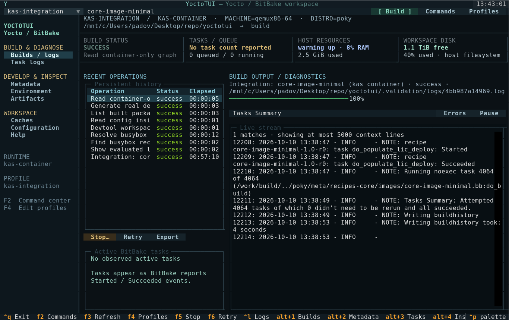
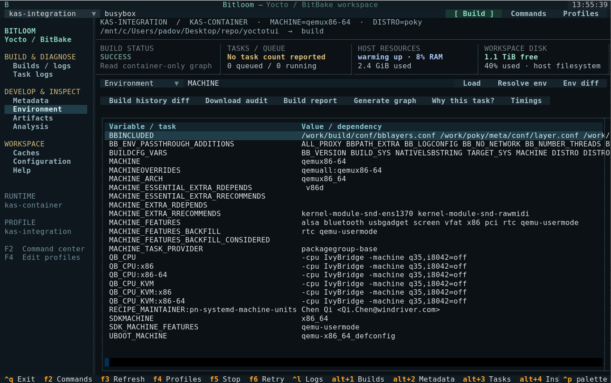
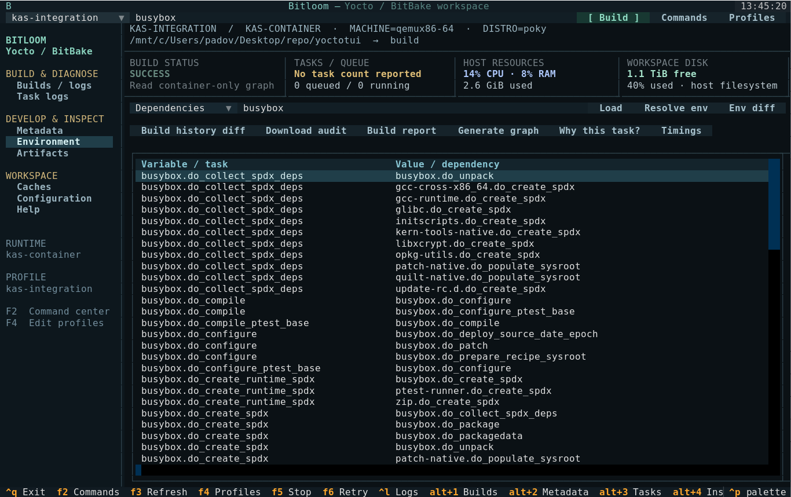
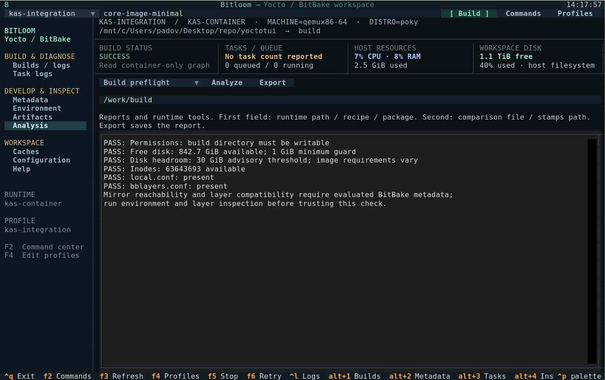
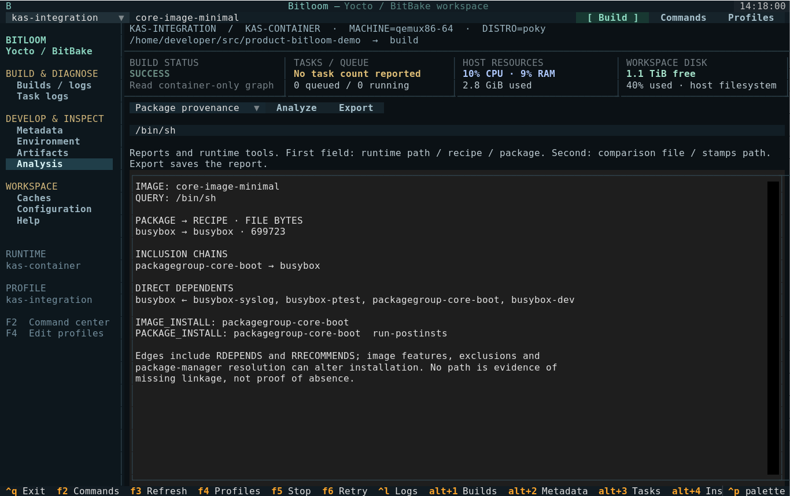
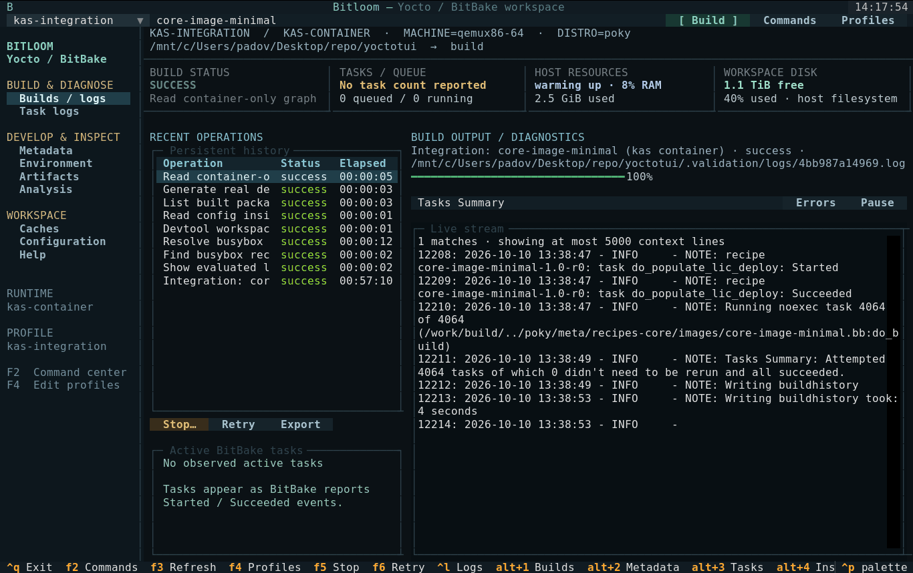

Validation report
Status
Completed on 2026-10-10. The real kas-container image build exited 0: all 4,064 tasks succeeded, with no reused tasks. Elapsed wall time was 57 minutes 10 seconds (10:41:45–11:38:55 UTC). BitBake reported 20 warnings and no errors. The deployed rootfs archive was independently opened and hashed from the Docker daemon filesystem.
Automated checks
The expanded suite passed 51 unit and UI tests on Python 3.10.12 and Textual 1.0.0. It covers argument construction, shell quoting, host/kas/container routing, profile persistence, serial jobs, failure exit codes, cancellation, single-signal graceful stop, cache deletion boundaries, full-file log search, report parsing, failure-log persistence, external kas checkout indexing and TUI navigation, graph traversal through cycles, read-only rootfs inventory, source previews, keyboard navigation, pause/resume and responsive terminal layout. Installation with pip install -e . completed successfully. The installed CLI was also launched in a real 140×42 PTY with the kas profile/history and exited cleanly with Ctrl+Q.
The sandbox's Python thread-pool shutdown hung even for a minimal asyncio.to_thread example. The same tests passed when executed outside that sandbox. This restriction is separate from application behavior.
Genuine Yocto image build
| Setting | Value |
|---|---|
| Target | core-image-minimal |
| Machine | qemux86-64 |
| Distro | poky |
| Release | yocto-5.0.8 (Scarthgap) |
| Poky revision | dc4827b3660bc1a03a2bc3b0672615b50e9137ff |
| kas wrapper / image | 4.8.1 |
| Image digest observed | sha256:fef6f850106a6823e65e133ed8157a847431dea4aa2de3a636c11f65e9977476 |
| Runtime | Docker, through kas-container |
| Engine integration | Bitloom Runner, SQLite history, persistent streamed log |
| Work | Dedicated /tmp/yoctotui-kas-validation mount in the Docker daemon namespace |
| Output format | root filesystem tar.bz2 |
| Threads | BB_NUMBER_THREADS=8, PARALLEL_MAKE=-j8 |
| Initial sstate | Wanted 1,854; Local 0; Mirrors 0; Missed 1,854 |
| Result | 4,064 attempted tasks, all succeeded; exit 0 |
| Rootfs archive | core-image-minimal-qemux86-64.rootfs-20261010104206.tar.bz2 |
| Archive size | 18,012,484 bytes |
| Rootfs evidence | 724 entries; shell present; 27,107,202 regular-file bytes |
| SHA-256 | f96d0d5d60d2465caa4ca5ce6b8d60e92c454e1a2a1df1e27d1c236db0f7cfe1 |
No Yocto build toolchain was installed on the host. The official kas image provides those dependencies. The project venv contains TUI/test/documentation tools and the kas-container wrapper. Build data and the downloaded image consume disk space; they are isolated, not nonexistent.
Docker Snap exposed a private /tmp mount initially owned by root. Only that dedicated work mount was assigned the builder UID/GID. Docker socket permissions were not modified. A failed initial attempt and the later real build logs are retained locally under .validation.
The configuration pins the fetched Poky commit for reproducibility. Standard upstream source fetches and mirrors are used; network warnings are not treated as successful fetch evidence.
Runtime probes after the build
All eight probes ran through Bitloom Runner and the same pinned kas-container image, with exit 0: evaluated layers, busybox recipe lookup, busybox environment, devtool status, container-only local.conf, built package listing, dependency graph generation and container-only graph reading. The environment contained 1,943 parsed variables, with MACHINE=qemux86-64 and PN=busybox. The graph contained 12,654 parsed edges.
The rootfs inventory utility was also exercised on the actual copied archive without extraction. The timing report found 4,048 completed timestamp pairs and zero unmatched starts; the slowest compile was llvm-native at 1,770 seconds. Task wall times overlap and do not sum to the build duration.
Reproduce post-build probes with PATH="$PWD/.venv/bin:$PATH" python tools/probe_kas.py. Local machine evidence is retained in .validation/result.json, .validation/probes.json, the SQLite history and original logs; generated rootfs files are ignored by Git.



Documentation site
The static documentation was exercised in Chromium 153 using Playwright: capability filtering, runtime profile examples, screenshot dialog, all three generated HTML manuals and a 390-pixel mobile viewport passed. No JavaScript page errors or failed resources were observed. The site and publishing workflow are committed; no GitHub remote is configured, so a public Pages deployment has not occurred.
Screenshots and GIF
The real-kas-* images show the verified build and its actual environment/dependencies. Other media is explicitly sample data. Media in assets/ was captured from the actual Textual app with Pilot. The sample workspace and controlled failure are clearly labelled demo data. SVG is exported by Textual and cropped to the terminal grid, removing Rich's decorative desktop-window frame; PNG is rendered with a local monospace font from that grid; GIF sequences those actual captures. No generated image or invented successful build screen is used.
Coverage boundaries
A passing minimal image build does not validate every board, old release, devtool operation, existing-container lifecycle, shared-cache topology, external device or optional testing/security class. Podman command construction is tested; a Docker execution does not prove an end-to-end Podman build. Graceful stop uses documented BitBake client behavior and single-signal unit verification; interrupting the full validation build was not used as a shortcut.
Reference behavior: BitBake knotty UI shutdown handling, kas container guide.
Additional Analysis validation
The Analysis panel was tested for metadata content search, report export and sstate mode switching. Parser checks cover package architecture changes, conflicting manifest versions, missing current-task counts, zero denominators and repeated warning messages. The existing real kas build supplied 35 manifest package/architecture entries, a 0% initial sstate hit rate and 20 warning occurrences. Comparing its unchanged manifest against itself yielded no differences; changed manifests were validated with explicit test fixtures. No additional cold Yocto build was required for these read-only features.
Persistent service and runtime evidence validation
The new workflows were exercised against the same pinned kas-container and existing real build on 2026-10-10 with tools/probe_workflows.py. Runtime preflight found writable configuration, 842.8 GiB available and more than 63 million free inodes. The snapshot recorded two Git repositories, two manifests, 4,798 package size records and eight non-symlink artifacts. These are bounded snapshot counts, not counts of packages installed in the minimal image.
Image provenance evaluated core-image-minimal and identified /bin/sh as owned by package/recipe busybox, with the inclusion path packagegroup-core-boot → busybox. Reported BusyBox package file bytes were 699,723; those are pkgdata file sizes, not compressed image size.
Two real jobs completed through the independent service after the submitting RPC connections closed: bitbake -S printdiff busybox and a warm bitbake core-image-minimal. Both exited 0. The warm build attempted 4,064 tasks, all already current and all succeeded; its summary reported Current 1,854 with Wanted 0. This validates an incremental container build, not a second cold build. The service was stopped only after its queue finished.
The runtime binary exporter transferred the actual 18,012,484-byte rootfs archive and verified SHA-256 f96d0d5d60d2465caa4ca5ce6b8d60e92c454e1a2a1df1e27d1c236db0f7cfe1, matching the original artifact. WSL verification exposed unsupported Unix sockets on the project Windows mount; sockets now live in a private Linux /tmp directory while history remains in the project.
Additional automated checks cover UI detach/reconnect, an independent service surviving closed client connections, build-directory leases, shared/exclusive cache locking, redacted exports, conservative signature plans, runtime edit conflicts/backups and byte-exact binary export without overwrite. A persistent daemon does not provide reboot recovery. Shared-cache locking only coordinates participants using the same advisory lock; external builders remain outside that guarantee.



A final runtime check resolved the configured kas image to its matching cached digest, found 22 BusyBox sigdata files and indexed 4,044 stamps signature references against 5,897 cache files. No before/after signature pairs existed for those BusyBox task variants, so no variable-difference claim was made from that workspace. Pair comparison was verified separately with an explicit two-signature fixture using the release-tool invocation. Default runtime build-path discovery also retained the pinned Poky commit without assuming the host path existed.
Theme and identity validation
The expanded suite passed 50 tests after adding twelve palettes. The theme UI test switches through every palette, verifies distinct actual screen backgrounds, cancels back to the original theme, saves Paper and restores it in a new session. Status/log colors use semantic palette colors, including the light palette. tools/capture_themes.py records actual terminal views for all twelve palettes and assembles the documentation GIF; NO_COLOR is cleared for those captures. The woven B icon is an original SVG with 32-, 180- and 512-pixel PNG exports used by README, site headers and favicons.
Package and launch instructions validation
The documented python -m build --no-isolation produced the 0.1.0 wheel and source archive after satisfying the declared setuptools >=61 requirement. The wheel was installed into a fresh temporary virtual environment and imported from its site-packages while running outside the checkout; CLI help, the twelve palettes, actual TUI startup and a switch to Paper were verified. The source archive includes README, Pages/manual sources and assets, integration YAML and the profile preparation tool.
tools/prepare_validation.py recreated the local kas profile from the recorded workspace without starting a build or deleting history. The documented TUI launch opened the actual local profile/history in a terminal and exited with Ctrl+Q; its idle service was then stopped. Build, launch, local test, fresh-machine setup, reconnect and documentation preview commands are covered in README and the user guide. These packaging checks do not claim another cold Yocto build.
Fresh demo setup and terminal resizing
setup-demo.sh --no-launch was run against a fresh temporary source copy without .venv, in a directory whose name contains spaces. It created the virtual environment, installed dependencies and generated demo metadata successfully. The installed app then launched at 80 × 24 and opened its command dialog using F2. No Yocto download or image build is part of this sample setup.
The responsive UI test resizes one running app through 160 × 50, 120 × 36, 90 × 28, 80 × 24, 60 × 20, 140 × 20 and back to 160 × 50. It checks visible build controls, usable log dimensions, section navigation and restoration of hidden panels. Small terminals hide history and metrics to preserve log space. The 60 × 20 test also opens commands, profiles and themes and checks that each dialog stays within the terminal boundaries. Scrollbar tracks and corners now use each theme's surface palette, and log panes only show vertical scrollbars when needed. Theme tests check log and analysis backgrounds and scrollbar colors across all twelve palettes.
The README and landing page open with an idle demo capture. Failure captures elsewhere show the explicitly labelled diagnostic sample; they do not represent a Bitloom failure or the real kas-container build result.
Release packaging
The manual release workflow was validated with actionlint 1.7.12. Local packaging generated versioned source archives, wheels, Debian packages and SHA256SUMS for 0.2.0 and 0.2.1; all checksum checks passed. Seven release tests verify stable version validation and synchronized distribution/runtime versions. The .deb was actually installed in a disposable kas container, where both /usr/bin/bitloom --help and the compatibility command succeeded and the runtime version was checked. No package was installed on the host. The final source, wheel and Debian package were also checked for the MIT license. This verifies local packaging; the GitHub release workflow has not been dispatched or published during this work.